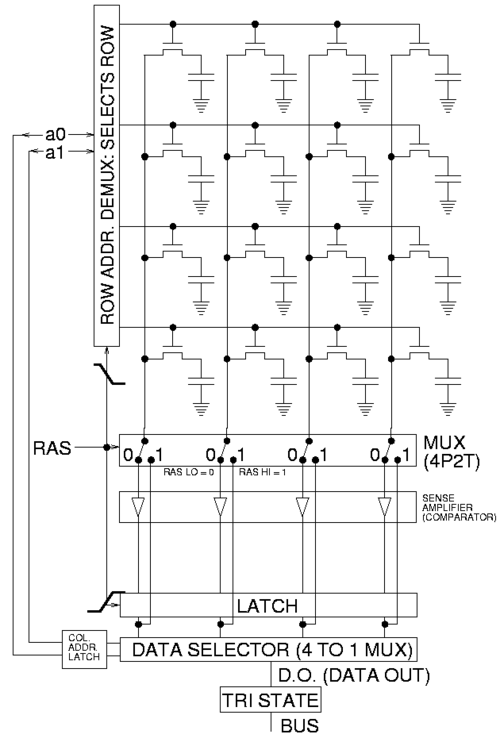
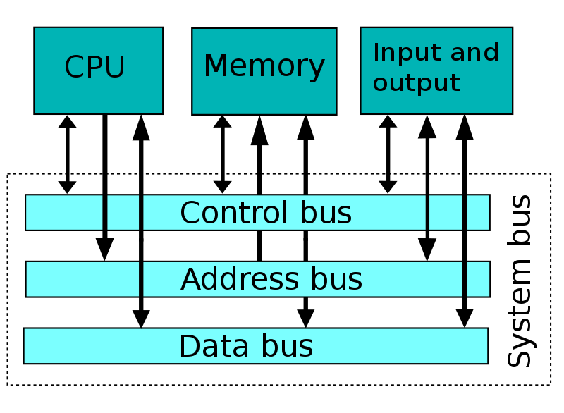

Обращения к памяти
Сохранить значение регистра eax по адресу 0x40100, а потом загрузить обратно в регистр ebx:
mov %eax, 0x40100
mov 0x40100, %ebx
(При этом мы используем 4 байта по адресам 0x40100, 0x40101, 0x40102, 0x40103.)
Положить в память по адресу 0x40100 целое число 0x1543:
movl $0x1543, 0x40100
Как правило, мы используем в качестве адресов метки:
.global main
main:
mov x, %eax
call writei32
call finish
x: .int 43
Не любой адрес в памяти доступен для чтения и тем более записи:
.global main
main:
incl x
call finish
x: .int 43
При попытке исполнения инструкции incl операционная система
остановит программу с сообщением «Segmentation fault»,
поскольку эти данные нельзя менять.
Секции .data и .bss
Любые байты, порождаемые ассемблером,
записываются в одну из секций исполняемого
файла. По умолчанию это секция .text, в которой
ожидается машинный код и которая недоступна для записи.
Данные можно положить в секцию .data:
incl x
.data
x: .int 43
.text
call finish
Обратите внимание, что ассемблер собирает вместе содержимое каждой
из секций: в примере выше инструкция call окажется в памяти
(и в исполняемом файле)
сразу после incl.
Есть также секция .bss, в которую можно положить только нулевые байты:
.bss
z: .int 0
.int 0
// .int 83 // would be an error
Typical memory layout:
┌──────────────────┐ Executable file
0x0000_0000│//////////////////│ ┌───────────────┐
│//////////////////│ │ headers │
├──────────────────┤ ├───────────────┤
│.text (read and │ │.text │
│ execute) │ │ │
eip─►│ │ │ │
│ │ │ │
│ │ │ │
├──────────────────┤ ├───────────────┤
│.data (read and │ │.data │
│ write) │ │ │
├──────────────────┤ └───────────────┘
│.bss (read and │
│ write) │
│ │
├──────────────────┤
│//////////////////│
│//////////////////│ /// = unmapped region
│//////////////////│ (inaccessible memory)
│//////////////////│
│//////////////////│
│//////////////////│
esp─►│stack │
│ │
│ │
│ │
│ │
├──────────────────┤
│//////////////////│
0xffff_ffff│//////////////////│
└──────────────────┘
Бывают read-only данные (например, тексты сообщений программы),
для них есть секция .rodata. Эта секция не имеет собственной
директивы, поэтому нужно воспользоваться директивой .section:
.section .rodata
pi_digits:
.byte 3,1,4,1,5,9,2,6
(На практике вместо .rodata константные данные часто кладут в .text.)
Endianness
x86 — little endian:
// 0x40100: 00 00 00 00 00 00 00 00
movl $0xabcdef, 0x40100
// 0x40100: ef cd ab 00 00 00 00 00
Младший байт по младшему адресу в памяти.
Расширение
movzbl %al, %edi // zero-extend, расширение нулями
movsbl %al, %edi // sign-extend, расширение знаковым битом
cdq // sign-extend eax to edx:eax
В синтаксисе Intel — movzx, movsx.
Разные способы адресации в x86
mov x + 4, %eax // прямая адресация
mov $x, %esi // (положили в esi адрес массива x)
mov 4(%esi), %eax // косвенная адресация
mov $17, %edi
// загружаем в eax 18-й элемент массива
// (адрес которого %esi + %edi*4)
mov (%esi, %edi, 4), %eax
// делаем то же самое
mov x(, %edi, 4), %eax
// и ещё раз
mov x + 17 * 4, %eax
.bss
x: .skip 4 * 100
x5: .int x + 4*5 // в x5 лежит адрес шестого элемента массива x
Общий вид обращения к памяти:
OFFSET(BREG, IREG, SCALE)
Здесь OFFSET — непосредственно заданное смещение, BREG — базовый регистр, IREG — индексный регистр, умножаемый на SCALE (SCALE может быть 1, 2, 4 или 8).
Итоговый адрес (effective address) вычисляется по формуле:
BREG + OFFSET + IREG * SCALE
Стек
Writable область памяти, которая используется как стек :-). Стек на x86 растёт вниз (от старших адресов к младшим). На верхушку стека (первый занятый байт) указывает регистр esp.
Скопировать верхушку стека (первые 4 байта) в регистр eax:
mov (%esp), %eax
Для того, чтобы класть данные на стек и выталкивать их оттуда, есть специальные инструкции:
push %eax // то же, что sub $4, %esp; mov %eax, (%esp)
pop %eax // то же, что mov (%esp), %eax; add $4, %esp
Инструкция push одна из немногих, которые могут обратиться
к двум адресам памяти сразу:
.data
x: .int 1900
.text
pushl x // взять 4 байта из памяти по адресу x
// и положить их в стек, то есть тоже в память
Можно пользоваться памятью выше esp, если вы знаете,
что там что-то есть. Например, если вы положили в стек
два 32-битных числа, их можно оттуда читать и там изменять:
pushl $6
pushl $7
// теперь стек выглядит так:
// 07 00 00 00 06 00 00 00 ...
// ↑ esp
mov 4(%esp), %eax // загрузили в %eax число 6
incl (%esp) // теперь на верхушке стека лежит число 8
Память ниже esp использовать не следует.
Инструкция push %esp кладёт на стек
то значение esp, которое было до её исполнения
(не уменьшенное на 4).
Подпрограммы
Когда в ДЗ просят сдать «функцию» или «подпрограмму»:
- исполнение начинается с метки с именем подпрограммы;
- метка должна быть
.global; - чтобы вернуть управление в проверяющую программу,
используйте инструкцию
ret; - если меняете значения регистров, кроме
eax,ecxиedx, сохраняйте их в стек и потом восстанавливайте.
Например, если вас просят написать функцию foobar,
и вам нужно менять регистры esi и edi:
.global foobar
foobar:
push %esi
push %edi
... // делаем что просят, можем портить esi и edi
pop %edi // восстанавливаем в обратном порядке
pop %esi
ret
(Подробнее в следующей лекции.)
Устройство ОЗУ
Мы уже видели SRAM — память на триггерах.
Основную часть памяти компьютера составляет DRAM: 
Процессор и память общаются посредством шины (bus): 